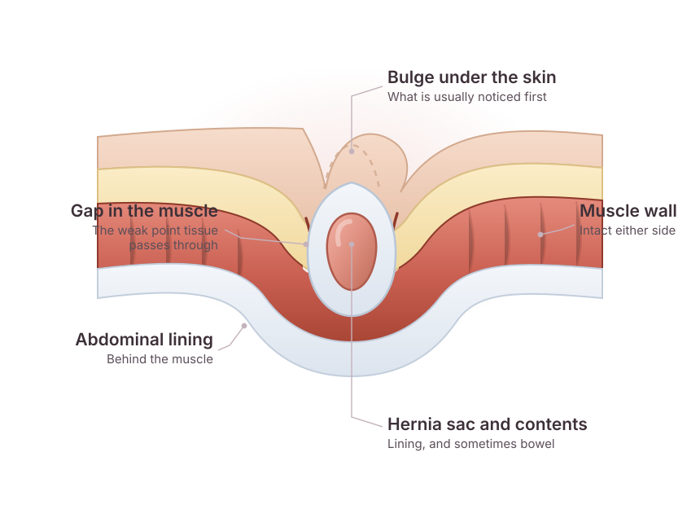

Inguinal hernia
In the groin, where the abdominal wall is naturally weaker. The most common type, and more common in men. Often noticed as a bulge that appears on standing or straining and settles on lying down.
Specialised evaluation and surgical treatment planning by an experienced surgical team, for groin, umbilical, incisional and other abdominal wall hernias.
Advitya Healthcares — Care Clinic, Shree Durga Palace, Morabadi, Ranchi · also Khunti and Kolkata
Send your reports before you travel — they are reviewed ahead of the consultation.

A hernia happens when tissue from inside the abdomen pushes through a weak point in the muscle wall that is meant to hold it in. The result is usually a bulge you can see or feel — in the groin, around the navel, or along the scar from a previous operation.
The muscle wall can be weak from birth, or the weakness can develop over time. Anything that repeatedly raises pressure inside the abdomen — heavy lifting, a long-standing cough, straining, previous surgery through the same area — can contribute.
A hernia does not heal on its own, and a truss or belt only holds it in temporarily. Many hernias stay stable for a long time; some enlarge slowly. The reason surgeons take them seriously is that tissue caught in the gap can occasionally lose its blood supply, which becomes an emergency.
Hernias are named for where the weak point is. Where it sits changes how it behaves and how it is repaired, which is why the examination matters more than the label.
In the groin, where the abdominal wall is naturally weaker. The most common type, and more common in men. Often noticed as a bulge that appears on standing or straining and settles on lying down.
At or beside the navel, through the point where the cord passed in the womb. Seen in infants, and in adults after pregnancy or with long-standing raised abdominal pressure.
Through the scar of a previous abdominal operation, where the healed wall is weaker than the tissue around it. These vary widely in size and often need planning before repair.
Lower in the groin than an inguinal hernia, through the canal where the vessels pass into the thigh. More common in women, and more likely than others to trap tissue, so it is usually assessed promptly.
In the midline between the navel and the breastbone. Often small, sometimes tender out of proportion to its size.
A hernia that has returned at the site of an earlier repair. The previous operation notes matter here, because they change what the second repair should be.
Please note. Which type you have, and whether it needs repairing, is decided by examination and where necessary imaging — not from a description on a web page.
These are the things people most often notice. Any of them is a reason to have the area examined — not a diagnosis in itself.
A swelling in the groin, at the navel or near an old scar, often more obvious on standing.
Aching or dragging at the site, typically worse by the end of the day.
A lump that is larger than it was, or one that has begun to appear more often.
Bulging or discomfort when you cough, lift, or strain.
Difficulty lifting, working or exercising because of the site.
A lump that becomes hard, painful and cannot be pushed back, with vomiting — seek emergency care the same day.
Most hernias are diagnosed in the clinic room, by examination. Scans are used when the swelling is small, deep, or the diagnosis is genuinely in doubt.
Which tests apply to your case is a clinical decision made after you have been examined and your existing reports reviewed.
Your history is taken: how long the swelling has been there, what makes it worse, previous operations.
The area is examined standing and lying, and while you cough, which is often enough to identify a hernia.
Ultrasound or a CT scan may be advised when the swelling is small, deep, or the diagnosis is not clear on examination.
The type of hernia, its size and its contents are established.
Fitness for anaesthesia and your day-to-day demands are discussed before any decision about surgery.
Not every hernia needs an operation immediately. A small, painless hernia in someone who is not fit for surgery may reasonably be watched, with clear instructions about the warning signs.
Where repair is advised, the aim is to return the contents to the abdomen and reinforce the weak area so that it does not give way again. In most adults this reinforcement uses a mesh; in some situations the tissue is repaired directly.
No procedure is promised in advance of an assessment. What is appropriate for you is decided after examination and a review of your investigations.
Hernia repair can be performed as open surgery through a single incision over the hernia, or laparoscopically through several small incisions. Neither approach is automatically better: the choice depends on the type and size of the hernia, whether it has been repaired before, your general health and what is appropriate on the day.
A lump in the groin is not always a hernia. You are examined before anything is planned.
Open and laparoscopic repair, chosen on the hernia rather than on habit.
Repairs that have failed elsewhere are assessed on their own merits.
Written limits on lifting and activity, so you are not guessing afterwards.
Pancreato-Biliary & Gastrointestinal Surgery
Dr. Deeksha Kapoor is a pancreato-biliary and gastrointestinal surgeon with training in advanced surgical oncology and minimally invasive surgery, from institutions in India, Japan, Germany and France. She leads the PancreaCare+ programme at Advitya Healthcares.
Hernia repair is routine work for a GI surgical unit, and it is done here within the same assessment discipline as the complex cases: examined properly, imaged only where imaging changes the plan, and repaired by the approach that suits the hernia in front of us.
From the first consultation through to follow-up, so you know what each stage involves before you commit to it.
How long the swelling has been there, what brings it out, and how much it interferes with your work.
The area is examined standing and lying, and while you cough — usually enough to confirm the hernia and its type.
Ultrasound or CT where the hernia is small, deep or recurrent, or where more than one defect is suspected.
Open or laparoscopic, mesh or tissue repair, day-case or overnight — decided with you and with your anaesthetic fitness in mind.
The defect is closed and reinforced. You are told before the day what approach is planned and what would change it.
Wound care, lifting limits, driving and return to work, with a follow-up appointment to check the repair.
Advitya Healthcares works through alliance partners in Ranchi, Khunti and Kolkata, so treatment is delivered close to home wherever possible.
When you can see or feel a bulge, when an existing one is getting bigger, or when the area aches during normal activity. Go to an emergency department the same day if the lump becomes hard and painful, cannot be pushed back, or is accompanied by vomiting.
No. Medicines can ease discomfort and a support belt may make a hernia less noticeable, but the gap in the muscle wall does not close on its own. Only a repair addresses the gap itself.
Not always. A small hernia that causes no symptoms may be monitored, particularly if surgery carries extra risk for you. That decision is made case by case after an examination.
No. It suits many patients, but the approach depends on the hernia type and size, previous surgery and anaesthetic fitness. Your surgeon will explain which approach is appropriate for you and why.
Mesh is used in most adult repairs because it reinforces the weak area and is associated with lower recurrence in many situations. There are circumstances where a tissue repair is preferred, and that will be discussed with you.
Recovery varies with the type of hernia, the approach used and your work. Your surgical team will give you specific advice about lifting, driving and returning to work before you are discharged.
Any previous operation notes or discharge summaries, recent scans or ultrasound reports, a list of your regular medicines, and details of other medical conditions.
Bring the bulge to someone who will examine it standing and lying down, tell you plainly whether it needs repairing now, and explain what the repair would involve.
Medical disclaimer. The information provided on this page is for educational purposes only and should not be considered a substitute for professional medical advice, diagnosis or treatment. Treatment options may vary depending on individual clinical evaluation.